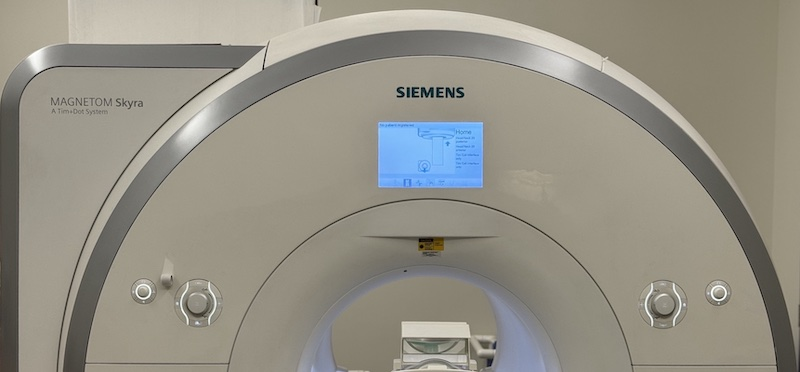

The MRI Research scanner is a Siemens Skyra 3T machine. The small display
above the scanner bore is called the DOT (Day Optimized Throughput)
and shows status information concerning participant position, connected
coils, and other items. Below the DOT display, on either side, are controls
consisting of a jog wheel and additional buttons. These are used to
position the table (via a projected crosshair light) and to adjust
participant comfort settings; such as headphone volume, ambient light,
and bore ventilation.
